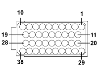

M010B ENGINE MANAGEMENT ECU (FRONT)
- Path
- Electrical equipment > 3 CONNECTORS > M INTERMITTENT AND TIMED ELECTRONIC DEVICES > M010 ENGINE MANAGEMENT ECU > M010B ENGINE MANAGEMENT ECU (FRONT)
- Kind
- connector pinout (pin -> wire colour -> other end)
- Applies to
- engines: 1.1, 1.2 8v; all production periods
- Interactive page
- https://sloeber94.github.io/elrnDB-fPnd/en/#/169003431
Applies to: engines: 1.1, 1.2 8v; all production periods

Wiring | Colour |
|---|---|
GRIGIO (grey) |
Pin | Cable | Destination | |||
|---|---|---|---|---|---|
Sec.. | Colour | Node | Connect. | Pin | |
1 | 0,75 | NZ (black with violet stripe) | 3 | ||
2 | 0,75 | BZ (white with violet stripe) | 3 | ||
6 | 0,35 | BS (white with pink stripe) | 4 | ||
8 | 0,35 | V (green) | I | ||
9 | 0,5 | LG (blue with yellow stripe) | 2 | ||
12 | 0,5 | Z (violet) | 1 | ||
14 | 0,5 | HN (grey with black stripe) | 51 | ||
15 | 0,5 | ZB (violet with white stripe) | 58 | ||
20 | 0 5 | B (white) | 1 | ||
24 | 0,5 | L (blue) | 2 | ||
25 | 0,5 | W | 5 | ||
27 | 2,5 | N (black) | X | 28 | |
A001G | 1 | ||||
28 | 2,5 | N (black) | X | A001G | 1 |
27 | |||||
29 | 0,5 | BR (white with red stripe) | 25 | ||
30 | 0,5 | RN (red with black stripe) | 2 | ||
32 | 0,35 | NS (black with pink stripe) | 3 | ||
33 | 0,5 | BN (white with black stripe) | 1 | ||
39 | 0,5 | LN (blue with black stripe) | 3 | ||
40 | 0,5 | M (brown) | 54 | ||
40 | 0,5 | M (brown) | 54 | ||
41 | 0,5 | G (yellow) | 73 | ||
47 | 0,75 | GB (yellow with white stripe) | 9 | ||
48 | 0,5 | AM (light blue with brown stripe) | 6 | ||
52 | 0,75 | GR (yellow with red stripe) | H | ||
Topics linked from this page (10)
- 12 FRONT
- B001D JUNCTION UNIT (FRONT)
- D004 FRONT/ENGINE COUPLING
- D008 AIR CONDITIONING-HEATER FRONT COUPLING
- D097A SHORT CIRCUITING COUPLING (FRONT)
- K017 LAMBDA SENSOR ON CATALYZER
- K018 LAMBDA SENSOR ON CATALYZER - 2
- K120 LINEAR SENSOR FOR FANS
- M001C BODY COMPUTER (FRONT)
- M010B ENGINE MANAGEMENT ECU (FRONT)